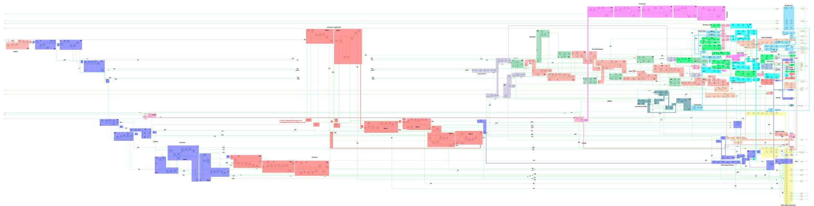

ZX Spectrum ULA 6C001
Chip-level reverse engineering: die photos → gate netlist → module analysis, schematics and waveforms.
The repository documents the reconstruction of the ZX Spectrum ULA 6C001
(die revision S-ULA6C001 6790-VII) from die photographs. The recovered
661-gate netlist was split into 19 modules and analysed gate by gate — with the
module schematics, typical waveforms, a full internal-signal table and a
gate-accurate simulator model.
Documentation
hdl/ula6c001.v): purpose, gate analysis, schematic, typical
waveforms and the C++ model.
issue #4
Internal signals
The full signal table: name → where it comes from →
where it goes → description, for every net crossing a module/pad boundary.
issue #10
Chip pads
All pads of the chip: direction, electrical type
(tri-state / open-collector / analog) and purpose.
Topology notes
Technology process, cell types and the routing grid of
the die (single metal layer m1).
HDL vs. netlist verification
Structural and behavioural comparison of the high-level
HDL with the reference netlist (Icarus Verilog).
issue #2
The chip at a glance
The annotated die photo below shows the recovered module placement:

- 661 gates in the flat netlist, decomposed into 19 modules
- Board clock
OSC= 14 MHz; video clocknCLK7= OSC ÷ 2 ≈ 7 MHz - Scanline = 448
nCLK7ticks (~64 µs); frame = 312 scanlines (~20 ms) - CPU clock
/PHICPU= OSC ÷ 4, with DRAM access contention - Bipolar process, single metal layer (m1), logic + peripheral cells
- Analog video output
U,V,/Ystraight from an on-chip DAC
Recovered modules
clkgen · tclk · hcounter · vcounter · latch_control · data_latch ·
attr_latch · ao_latch · pixel_shift_reg · flash_clock · flash_xnor ·
color_mux · video_addr_gen · address_enable · ras_cas_romcs ·
video_signal_features · dac_setup · io · contention
See the ULA modules page for the module-by-module breakdown.
Datasets
- Original die photographs were obtained from the Silicon Pr0n Discord; the photos were taken by 4e71 and are used with the author's permission: reversing.pl/storage/ZX_ULA.jpg.
- The source image was downscaled ×4 (topology does not need a high
resolution) and the masks were partially rebuilt to produce the master
image
ZX_ULA_sm.jpginimgstore/— mirror: Google Drive.
{kind=link}
Research workflow
- Source image (die photograph)
- Vectorisation and identification of the primitive cells (
ulabase.v) - Netlist extraction (Deroute)
- Netlist export to Verilog (Deroute)
- Netlist → chip schematic in a mainstream EDA (Xilinx PlanAhead)
- Careful analysis; netlist split into sub-modules, signal naming; repeat from step 4 (optional)
Repository layout
| Path | Content |
|---|---|
netlist/ | flat reference netlist (ula6c001.v, 661 cells) + cell library ulabase.v |
hdl/ | the same gate set decomposed into 19 modules, plus the top schematic figure |
specs/ | markdown sources of this site (modules, signals, pads, topology, verification report) |
docs/ | this documentation site (GitHub Pages) |
imgstore/ | images: die photos, module schematics, waveforms, pinout |
icarus/ | Icarus Verilog testbenches and run scripts |
tools/ | reproducible generators for the figures, waves and this site |
logisim/ | Logisim evolution file |
ulasim.py | tick-by-tick gate-accurate simulator of the HDL |
Status
Attention! The module schematics and waveform pictures are essentially placeholders — the trustworthy information is in the text, gate tables and equations. Please read the warning on the ULA modules page.
References
- Signal names follow Chris Smith's reverse engineering: zxdesign.info
- "Display for a computer" — patent EP0107687B1 (Richard Francis Altwasser): Google Patents